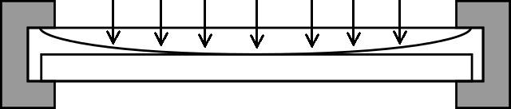

Need for quantum theory
It's all about calculating the odds!

(Transmitted light)(Reflected light)
It seems as though we must use sometimes the one theory and sometimes the other, while at times we may use either.
We are faced with a new kind of difficulty. We have two contradictory pictures of reality; separately neither of them fully explains the phenomena of light, but together they do...
- Albert Einstein
What about particles?
In theory, classical particles are defined to have zero dimension!
They follow Newton's rules! (the so called, classical mechanics)
They can't be wavy...
... and waves?
Well, they just spread out... (to disturb things)
But, it turned out that energy comes only in packets!
So, waves can't be particles! (sigh)
Well, then what are they?
We don't know!
All we can talk about is the "chance"
... of whether the stuff can (or cannot) happen!
Let's do the experiment!
Observation is the only test for any scientific theory!
An experiment with rigid balls...

An experiment with water...

Where's the particle in a box?

An experiment with quantum "things"...

The horrible outcome...

What do we physicists do, then?
We calculate the probability for almost every single quantum variable (position, time, momentum, energy, ...)
But, it's the only theory we have...
... the magical framework on which nature is based on!
It's our crown jewel!
Now, what's the probability that half of the audience are asleep?
If you're curious, this presentation is made using "reveal.js" framework by @hakimel